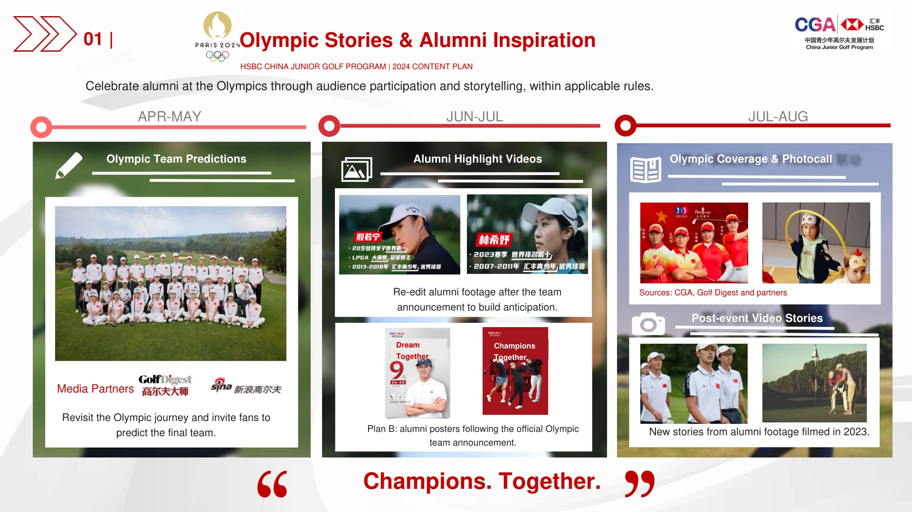
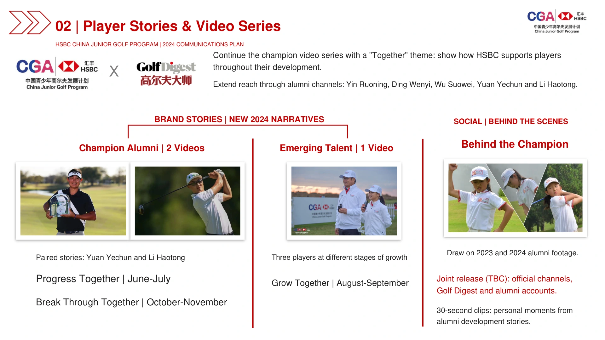
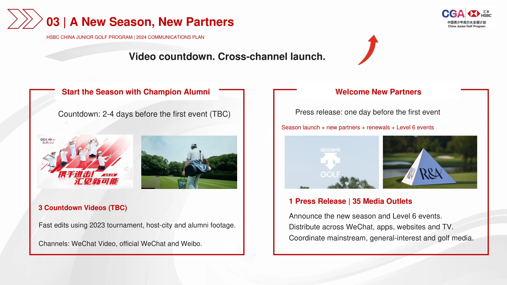
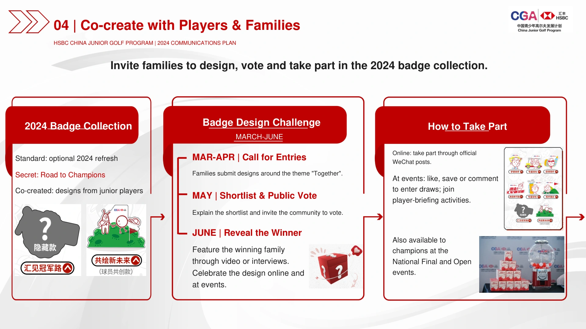
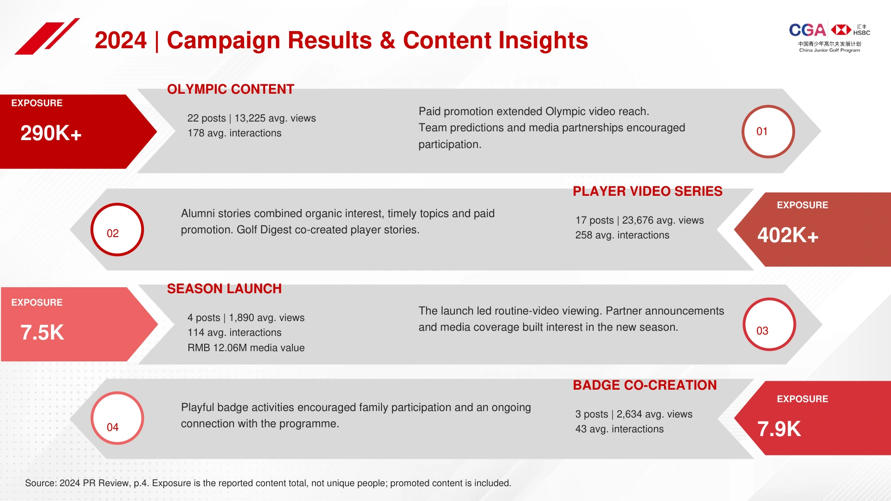
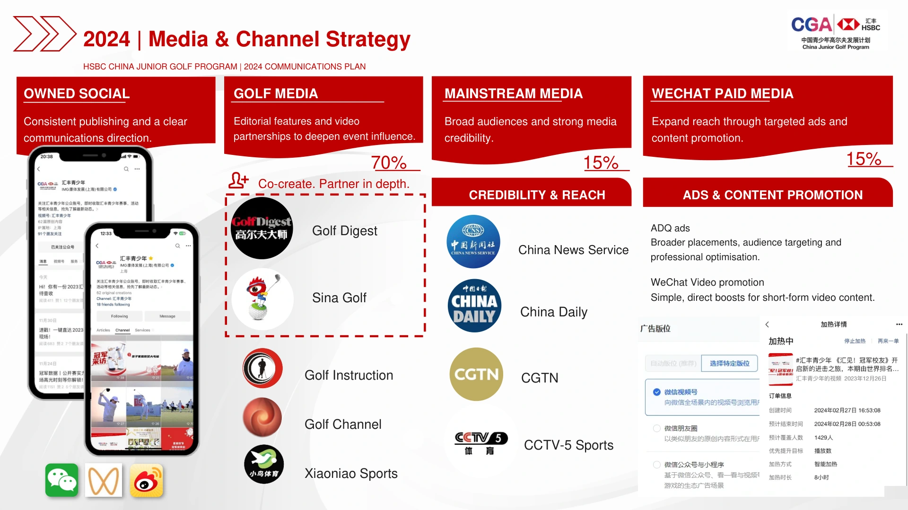
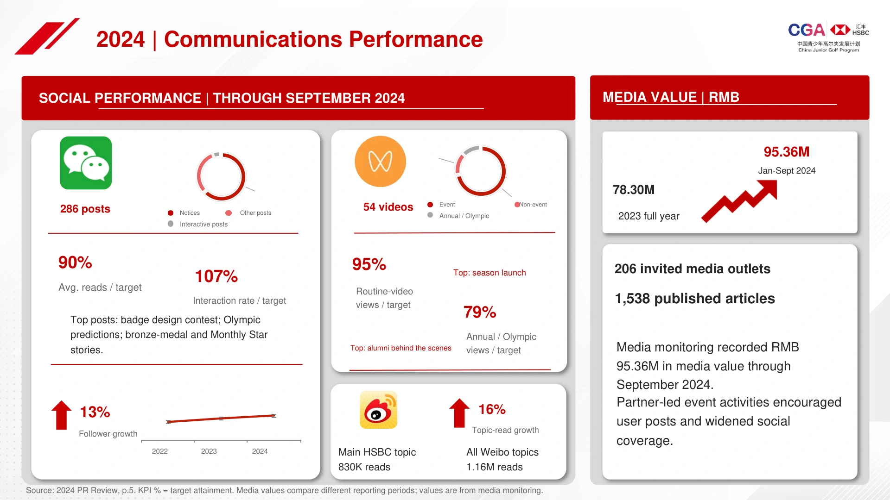
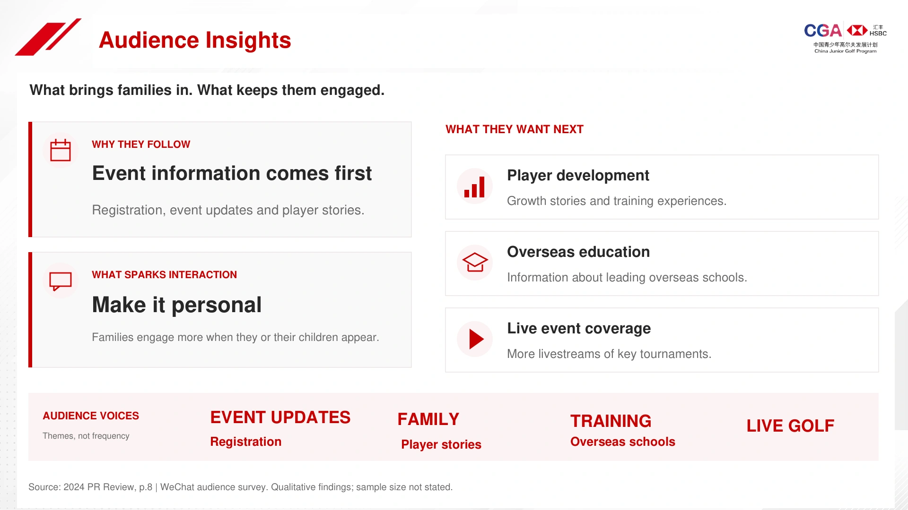

01 / Year-round Sports PR
01 / 全年体育公关
HSBC China Junior Golf Program
汇丰青少年高尔夫发展计划
Year-round event communications highlighting junior golf development and the value of the competition programme.
通过全年赛事传播，持续呈现青少年高尔夫的发展与赛事价值。
Overview
项目概览
A junior golf development programme linking grassroots participation, graded competitions and international opportunities.
汇丰青少年于 2007 年启动，是国内唯一官方认证的完整青少年高尔夫人才培养体系，覆盖高尔夫普及、基层参与、分级赛事、全国积分排名与国际赛事机会。
My Role
我的角色
I led annual PR planning, media relations, social content and on-site media-centre operations.
统筹全年公关规划、媒体关系与社媒内容，并负责现场媒体中心管理，串联赛季传播与赛事现场执行。
Challenge
项目挑战
Sustain interest throughout the season and make the player development pathway easy to understand.
挑战在于如何贯穿整个赛季保持关注度，并清晰讲述从校园与训练营启蒙，到全国顶级赛事、再到国际赛事外卡机会的完整成长路径。
Strategy
传播策略
Connect player growth stories, trusted media and community participation to show HSBC’s long-term role in junior golf.
不把项目当作单一赛事系列传播，而是将其定位为长期的青少年高尔夫成长通道：串联官方赛事体系、球员成长故事、权威媒体背书、社群互动与赞助商价值。
Execution
项目执行
- Annual PR review and next-year planning
- Season launch communication planning
- On-site media-centre operations
- Media and creator relations
- Social content and campaigns
- 年度 PR 复盘与次年规划
- 赛季启动传播策划
- 现场媒体中心管理与媒体服务
- 媒体、KOL 与合作伙伴关系维护
- 社交媒体运营与 campaign 策划
Results / Evidence
成果与依据
Media monitoring recorded RMB 78.3M+ in media value, 244 invited media outlets and 1,993 articles in 2023. Jan–Sep 2024: RMB 95M+, 206 outlets and 1,538 articles.
2023 年全年媒体价值超过 7,830 万元，邀请发稿媒体 244 家、发稿总量 1,993 篇；2024 年 1 至 9 月媒体价值超过 9,500 万元，邀请发稿媒体 206 家、发稿总量 1,538 篇。
Key Learnings
关键收获
Player progress gives a season-long programme a stronger story than event announcements alone.
长期人才培养项目不能只发布赛事信息。传播体系需要让成长路径清晰可见，持续呈现球员进阶，也让合作伙伴在整个赛季持续感受到参与价值。
Communications Results
传播成果
Season Results
赛季传播表现概览
2023
2024 / Jan-Sep
Selected Work Evidence
精选工作证据
A Season-Long Communications System
贯穿整个赛季的传播体系







